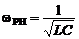
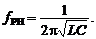
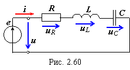
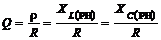
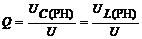

Резонанс
напряжений (РН) возникает в цепи, содержащей индуктивную катушку L и конденсатор С, включённые последовательно с источником энергии е (рис. 2.60). В схему замещения цепи включён также элемент R, аккумулирующий все виды потерь мощности: в катушке, конденсаторе, в проводах и во внутреннем сопротивлении источника энергии.
При резонансе ток i в цепи должен совпадать по фазе с напряжением u =
Umsinωt. Это возможно, если входное сопротивление Z = R + j(XL− XC) будет чисто активным. Условием наступления РН в схеме (рис. 2.60) является равенство нулю реактивного сопротивления на входе цепи, т. е.
XРН = XL(РН) − XC(РН) = 0, ωРНL = 1/(ωРНC), (2.100)
откуда угловая (в рад/с) и циклическая (в Гц) резонансные частоты контура
XРН = XL(РН) − XC(РН) = 0, ωРНL = 1/(ωРНC), (2.100)
 и (2.101)
Последовательный колебательный контур характеризуется, кроме резонансной частоты ωРН, характеристическим сопротивлением и добротностью.
Характеристическое (волновое) сопротивление ρ контура равно его индуктивному или ёмкостному сопротивлению при резонансе:
;
(2.102)
Характеристическое сопротивление последовательного колебательного контура составляет десятки и сотни ом.
Добротность Q контура − это отношение характеристического сопротивления ρ контура к активному R при резонансе, т. е.
(2.103)
Чем больше ρ, тем добротнее контур, тем будут ýже частотные характеристики тока и напряжений на элементах контура. В радиотехнических контурах добротность Q = 100...1000, в электротехнических цепях добротность Q обычно не превышает 3...5.
Добротность Q показывает, во сколько раз напряжение на зажимах конденсатора UC = UL при резонансе больше напряжения питания U, т. е.
.(2.104)